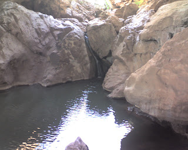

Skip to the record
Threads
The Wayback
Recovered weblog entry
Near the exit
August 18, 2007
/
RyanDavid Burningham

Newer
On the way to Payson
Older
McDonalds
Dig somewhere else
POCKET_TACO
Image of the Day